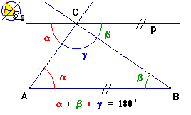
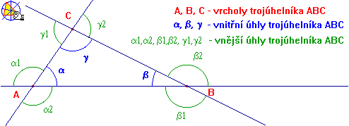
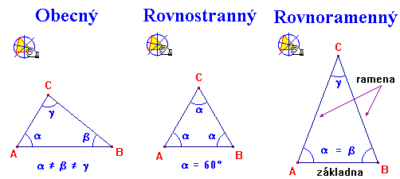
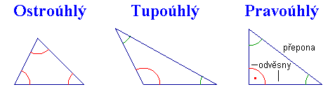
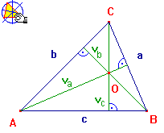
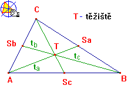
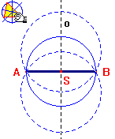
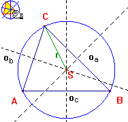
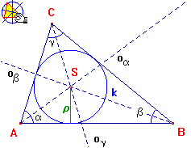

Zopakujte si jaké znáte druhy úhlù a zamyslete se nad tím, jaké mù�e mít trojúhelník vnitøní úhly, kolik mù�e mít úhlù nekonvexních, pøímıch, tupıch, pravıch, ostrıch ...

 , èili napøíklad trojúhelník ABC zkrácenì zapíšeme jako ABC. Vrcholy trojúhelníkù oznaèujeme velkımi tiskacími písmeny, strany malımi tiskacími písmeny a úhly vìšinou malımi písmeny øecké abecedy.
, èili napøíklad trojúhelník ABC zkrácenì zapíšeme jako ABC. Vrcholy trojúhelníkù oznaèujeme velkımi tiskacími písmeny, strany malımi tiskacími písmeny a úhly vìšinou malımi písmeny øecké abecedy.
Souèet vnitøních úhlù trojúhelníku je úhel pøímı
 |
Toto tvrzení si nejlépe doká�eme na tomto obrázku. Nejprve narısujeme pøímku p, která prochází vrcholem trojúhelníku (C) a je rovnobì�ná s jeho protilehlou stranou (AB). Poté sestrojíme støídavé úhly k úhlùm pøilehlım k této stranì (a, b). Jak je vidìt, grafickı souèet úhlu g a støídavıch úhlù k úhlùm a, b tvoøí pøímı úhel a ten, jak u� víme z pøedchozí kapitoly má velikost 180°. |
|
Zopakujte si jaké znáte druhy úhlù a zamyslete se nad tím, jaké mù�e mít trojúhelník vnitøní úhly, kolik mù�e mít úhlù nekonvexních, pøímıch, tupıch, pravıch, ostrıch ...
| |


Zopakujte si : proè mù�e mít trojúhelník pouze jeden pravı nebo tupı úhel ?
| |
Mù�e bıt pravoúhlı trojúhelník zároveò rovnoramennı ?
| |
Mù�e bıt rovnostrannı trojúhelník zároveò pravoúhlı ?
|
1. Rozbor
Rozbor bude v�dy obsahovat náèrtek. Zde si nakreslíme od ruky trojúhelník a vyznaèíme na nìm barevnì, co je zadáno. Náèrtek nám pomù�e vymyslet, jak postupovat pøi konstrukci.
Druhá èást, kterou bude rozbor v�dy obsahovat je urèení podmínek øešitelnosti úlohy. V této èásti ovìøíme, jestli trojúhelník lze podle danıch parametrù sestrojit.
2. Zápis konstrukce
Konstrukci zapisujeme postupnì, jak ji budeme provádìt pomocí matematickıch znaèek a symbolù. Jednotlivé body konstrukce píšeme na zvláštní øádky a oznaèujeme èísly.
3. Konstrukce
Pøesnì podle pravítka, kru�ítka, úhlomìru a dalších rısovacích pomùcek sestrojíme zadanı trojúhelník.
V této kapitole se seznámíme se tøemi typy konstrukcí trojúhelníku:
 | Stejnım zpùsobem budeme postupovat i u trojúhelníku a povedeme kolmici k jedné stranì trojúhelníku a� do protilehlého vrcholu. Proto�e trojúhelník má tøi strany i vrcholy, mù�eme takto sestrojit tøi vıšky. Vıšky oznaèujeme malım v s indexem názvu strany ke které pøíslušná vıška patøí. Slovem vıška oznaèujeme v trojúhelníku jak úseèku, tak její délku. Prùseèík vıšek O nazıváme ORTOCENTRUM trojúhelníku. |
 | Tì�nice trojúhelníku je úseèka spojující vrchol trojúhelníku se støedem jeho protilehlé strany. Oznaèíme ji malım t s indexem názvu strany, ke které nále�í. Prùseèík tì�nic se nazıvá tì�ištì trojúhelníku a oznaèujeme ho T. Tento bod dìlí tì�nice v pomìru 2:1 tak, �e delší úsek tì�nice le�í v�dy u vrcholu. To znamená, �e úsek tì�nice od vrcholu do tì�ištì je v�dy 2/3 celkové délky tì�nice. |
Odvoïte, kde se nachází tì�ištì u kru�nice, ètverce, kosoètverce, obdelníka a dalších geometrickıch tvarù.
 
Kru�nice opsaná trojúhelníku
Kru�nice opsaná trojúhelníku je kru�nice, která prochází všemi tøemi vrcholy trojúhelníku. Ne� se pustíme do hledání této kru�nice, pokusíme se najít alespoò nìkteré kru�nice procházející dvìma body.
Konstrukci si proveïte do sešitu nebo na papír. Tady se uká�e, kdo umí pøesnì rısovat.Bude le�et støed kru�nice opsané S v�dy uvnitø trojúhelníku, tak jak je to znázornìno na obrázku? Pou�ijte pøíkladu v
Cabri.Kde le�í støed kru�nice opsané u pravoúhlıch trojúhelníkù?
Kru�nice vepsaná trojúhelníku
Kru�nice vepsaná je taková kru�nice, která se zevnitø dotıká všech tøí stran trojúhelníku. Ne� ji zaèneme konstruovat, podíváme se nejprve, jak sestrojit støed kru�nice, která se dotıká dvou rùznobì�ek. Zopakujte si, co víte o ose úhlu.
 | Pokud jste si pøipomìli, jistì u� víte, �e osa úhlu je pøímka, její� ka�dı bod má stejnou kolmou vzdálenost od obou ramen úhlu. To znamená, �e sestrojíme-li kru�nici se støedem na ose úhlu, která se dotıká jednoho ramene úhlu, bude se dotıkat i ramene druhého. Sestrojte tedy v trojúhelníku osy všech tøí úhlù a jestli�e jste pøesnì rısovali, protli se v jednom bodì uvnitø trojúhelníku. Bod oznaète S a sestrojte kru�nici se støedem S dotıkající se libovolné strany. Pøi pøesném rısování se dotkne i zbylıch dvou stran. Této kru�nici øíkáme kru�nice vepsaná trojúhelníku. |